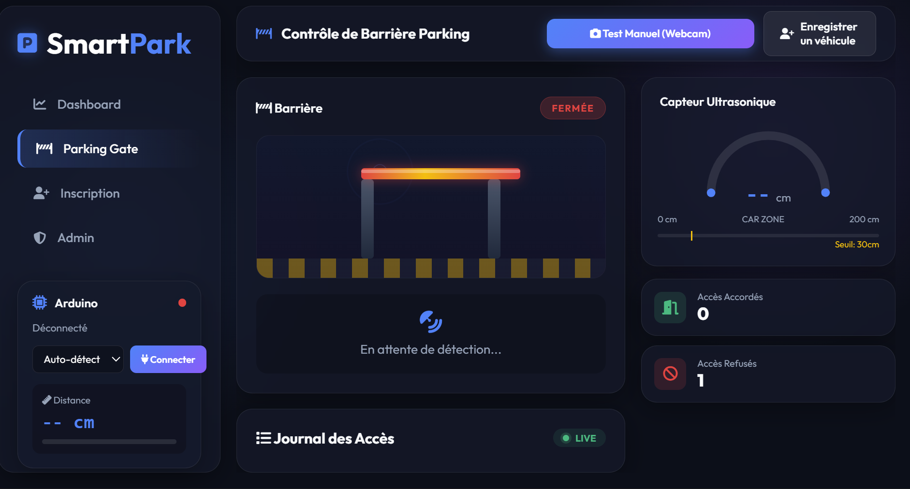
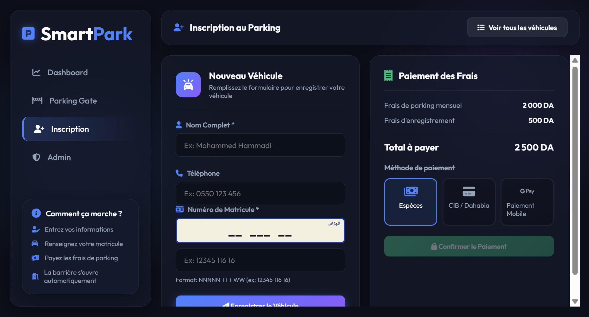

This project was developed as part of the ISI (Institut Supérieur d'Informatique) curriculum. It implements an intelligent parking access control system that combines embedded hardware (Arduino) with a web-based administration platform.
Build a fully integrated system that:
| Feature | Description |
|---|---|
| Automatic Detection | HC-SR04 ultrasonic sensor detects cars < 30 cm |
| License Plate OCR | OCR.space API with Algerian plate format parsing |
| Access Control | Gate opens only for registered + paid vehicles |
| Real-time Dashboard | Live distance gauge, gate animation, access logs |
| Vehicle Registration | Web form to register vehicles with owner info |
| Payment Management | Admin panel to mark vehicles as paid/unpaid |
| Arduino Integration | Serial communication for sensor data + gate control |
| Layer | Technology | Version | Purpose |
|---|---|---|---|
| Backend | Python | 3.x | Server-side logic |
| Web Framework | Flask | 3.0.0 | HTTP routing & templates |
| Real-time | Flask-SocketIO | 5.3.6 | WebSocket communication |
| Database | SQLite | Built-in | Persistent data storage |
| OCR | OCR.space API | v2 | License plate text extraction |
| Computer Vision | OpenCV | 4.9.0 | Webcam capture |
| Serial Comm. | PySerial | 3.5 | Arduino ↔ Python communication |
| Frontend | HTML/CSS/JS | - | Web interface |
| Embedded | Arduino (C++) | AVR | Sensor reading + servo control |
| Hardware | HC-SR04 | - | Ultrasonic distance sensor |
| Hardware | Servo Motor (SG90) | - | Gate barrier actuator |
| Table | Purpose | Key Fields |
|---|---|---|
cameras | Camera/capture device registry | IP, location, status |
captures | All OCR capture records | plate, timestamp, image path, reliability |
registered_vehicles | Authorized vehicles | owner, plate (unique), payment status |
access_logs | Gate access history | plate, granted/denied, reason, distance |
| Direction | Message | Meaning |
|---|---|---|
| Arduino → PC | DIST: | Current ultrasonic distance (every 300ms) |
| Arduino → PC | CAR_DETECTED | Vehicle within detection range (< 30cm) |
| Arduino → PC | GATE_OPENED | Servo moved to 90° (gate open) |
| Arduino → PC | GATE_CLOSED | Servo moved to 0° (gate closed) |
| Arduino → PC | PARKING_SYSTEM_READY | Arduino booted and ready |
| PC → Arduino | GATE:OPEN | Command to open gate (after DB verification) |
| PC → Arduino | GATE:CLOSE | Command to close gate |
\n (newline)| Component | Pin | Arduino Pin | Notes |
|---|---|---|---|
| HC-SR04 VCC | VCC | 5V | Power |
| HC-SR04 GND | GND | GND | Ground |
| HC-SR04 TRIG | Trigger | Pin 9 | Output — sends pulse |
| HC-SR04 ECHO | Echo | Pin 10 | Input — receives echo |
| Servo Signal | Orange/Yellow | Pin 6 | PWM control |
| Servo VCC | Red | 5V | Power |
| Servo GND | Brown/Black | GND | Ground |
Arduino Uno
┌─────────────────────┐
│ │
│ Pin 9 ──────────── TRIG ─┐
│ Pin 10 ──────────── ECHO ─┤ HC-SR04
│ 5V ──────────── VCC ─┤ Ultrasonic
│ GND ──────────── GND ─┘ Sensor
│ │
│ Pin 6 ──────────── Signal ─┐
│ 5V ──────────── VCC ─┤ Servo Motor
│ GND ──────────── GND ─┘ (Gate)
│ │
│ USB ═══════════════ PC (COM3, 9600 baud)
└─────────────────────┘| Method | Endpoint | Description |
|---|---|---|
| GET | / | Main dashboard |
| GET | /parking | Parking gate control page |
| GET | /register | Vehicle registration form |
| GET | /admin | Admin panel |
| Method | Endpoint | Description |
|---|---|---|
| POST | /upload | Upload image for OCR |
| GET | /api/captures | Get last 50 captures |
| DELETE | /api/captures/ | Delete a capture |
| Method | Endpoint | Description |
|---|---|---|
| POST | /api/register | Register a new vehicle |
| GET | /api/vehicles | List all registered vehicles |
| POST | /api/vehicles/ | Mark vehicle as paid |
| POST | /api/vehicles/ | Mark vehicle as unpaid |
| DELETE | /api/vehicles/ | Delete a vehicle |
| Method | Endpoint | Description |
|---|---|---|
| POST | /api/gate/capture | Manual capture + OCR + gate control |
| POST | /api/check-plate | Check plate status without gate action |
| GET | /api/access-logs | Get access history (last 100) |
| Method | Endpoint | Description |
|---|---|---|
| GET | /api/arduino/status | Connection status + last distance |
| POST | /api/arduino/connect | Connect to serial port |
| POST | /api/arduino/disconnect | Disconnect |
| GET | /api/arduino/ports | List available COM ports |
| POST | /api/arduino/command | Send raw command to Arduino |
| Event | Direction | Payload |
|---|---|---|
distance_update | Server → Client | {distance: float} |
gate_triggered | Server → Client | {message: string} |
gate_status | Server → Client | {status: "open"/"closed"} |
gate_result | Server → Client | {access, plate, reason, ...} |
new_capture | Server → Client | {plaque, fiabilite, timestamp, image} |
arduino_status | Server → Client | {connected, port, message} |
vehicle_registered | Server → Client | {id, owner, plate, ...} |
vehicle_updated | Server → Client | {id, is_paid} |
vehicle_deleted | Server → Client | {id} |
lapi_app/
│
├── app.py # Entry point — Flask init, blueprints, startup
├── config.py # Constants and settings
├── database.py # SQLite connection + schema initialization
├── init_db.py # Backward-compatible DB init script
├── requirements.txt # Python dependencies
├── lapi_db.sqlite # SQLite database file
├── test_arduino.py # Standalone Arduino diagnostic tool
│
├── services/ # Backend business logic
│ ├── __init__.py
│ ├── arduino_service.py # Serial communication with Arduino
│ ├── ocr_service.py # OCR API + plate format parsing
│ ├── camera_service.py # Webcam capture via OpenCV
│ └── gate_service.py # Detection pipeline orchestrator
│
├── routes/ # Flask route blueprints
│ ├── __init__.py
│ ├── pages.py # HTML page routes
│ ├── capture_routes.py # Image upload + capture API
│ ├── vehicle_routes.py # Vehicle registration + payment API
│ ├── parking_routes.py # Gate control + access logs API
│ └── arduino_routes.py # Arduino serial control API
│
├── templates/ # Jinja2 HTML templates
│ ├── index.html # Main dashboard
│ ├── parking.html # Parking gate control
│ ├── register.html # Vehicle registration form
│ └── admin.html # Administration panel
│
├── static/ # Frontend static assets
│ ├── css/
│ │ ├── style.css # Global styles
│ │ └── parking.css # Parking page styles
│ ├── js/
│ │ ├── script.js # Dashboard logic
│ │ ├── parking.js # Gate control + SocketIO events
│ │ ├── register.js # Registration form logic
│ │ └── admin.js # Admin panel logic
│ └── uploads/ # Captured images
│
├── arduino/ # Arduino sketches
│ ├── arduino_parking/
│ │ └── arduino_parking.ino # Main parking system sketch
│ └── test_sensor_servo.ino # Standalone hardware test
│
└── docs/ # Documentation
└── rapport.md # This report# Install Python dependencies
pip install -r requirements.txt
# Upload Arduino sketch
# Open arduino/arduino_parking/arduino_parking.ino in Arduino IDE
# Select Board: Arduino Uno, Port: COM3, then Upload# Start the application
py app.pyThen open in browser:
# Close app.py first, then run:
py test_arduino.pyThe Smart Parking System features a modern, responsive web dashboard for both users and administrators.
Displays real-time system metrics, active cameras, and recent captures.
Live distance monitoring, gate status animation, and access logs.

Form to register new vehicles and process payments.

Manage registered vehicles, view payment status, and review access history.

This project demonstrates a complete IoT-integrated web application that bridges embedded hardware (Arduino sensors and actuators) with a modern web stack (Flask, SocketIO, REST API). The modular architecture ensures clean separation of concerns:
arduino_service.pyThe system successfully automates parking gate access control with license plate recognition, providing a practical foundation that can be extended with features like multiple camera support, license plate image preprocessing, or integration with payment gateways.
Smart Parking System — Project Report